The virtual yellow became indispensable as soon as it appeared for the first time on television in the 90's. The first down line has forever change the way we look at football on television, adding crucial information about the distance the ball carrier need to get to in order to get a first down. However, in the non-professional industry, football coaches and managers have no way of virtually adding these important lines to their footage. With 1,085,272 highschool athletes in 2016, football is the no.1 participation sport in the U.S. Companies like Hudl have taken over the football footage management using web application. Having this kind of footage available on a backend server represent tremendous possibility to create automation process in order to add values to this footage with things such as first down and scrimmage lines.
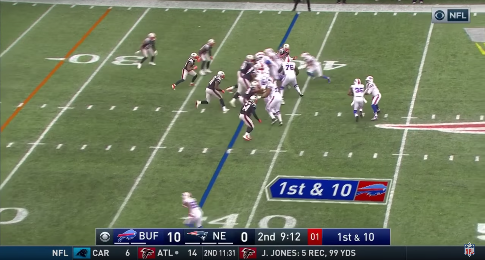Project description
The goal of the project is computing a virtual first down and scrimmage line using Python and OpenCV. The main approach is using reference points to compute homography matrix in order to convert frames between the actual footage and a real scale model of a football field (CFL in our case). After homography matrix are computed, lines are draw in the model and converted back in the actual footage using inverted homography matrix and HSV masks of the field.
Code
Code is available on Github
Homography calculation
In order to draw the lines on the field, the first step is to compute the transformation matrix between the actual frame and the footbal field model. To find the homography matrix between the frame and the field model, the user need to gather 4 matching reference points in each of them.
Homography matrix calculation
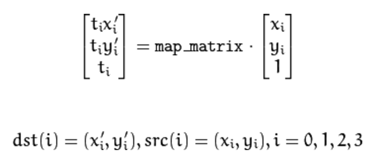Lines detection
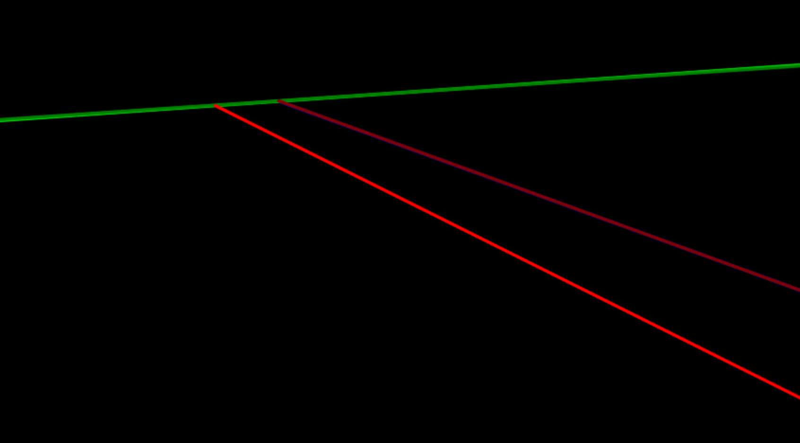Detected lines in original image
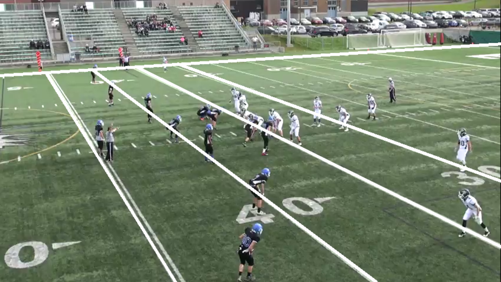Lines extraction
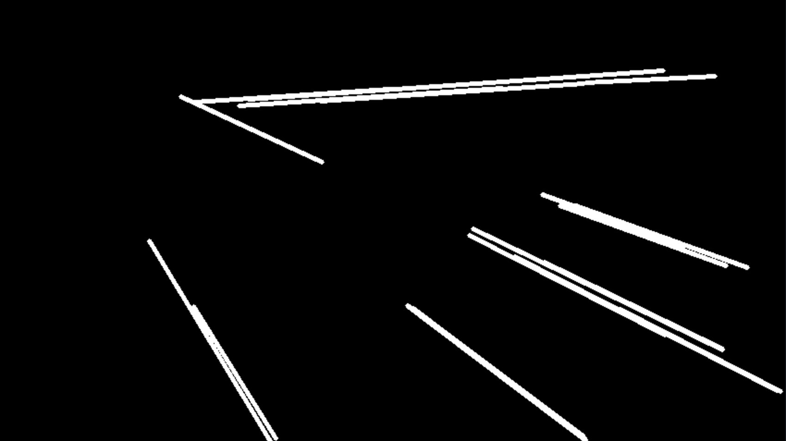blurred image
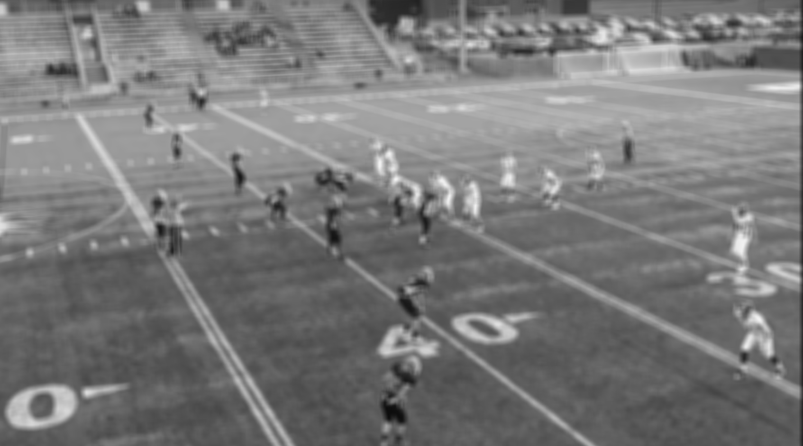Canny
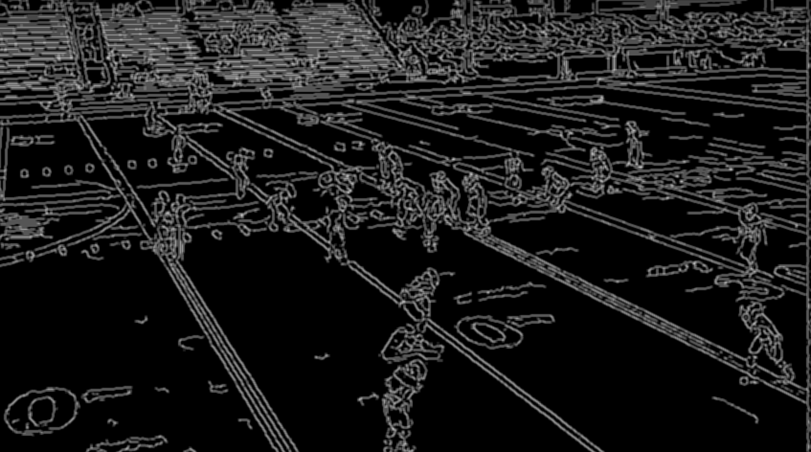Canny cut

Homography applied to original image in model
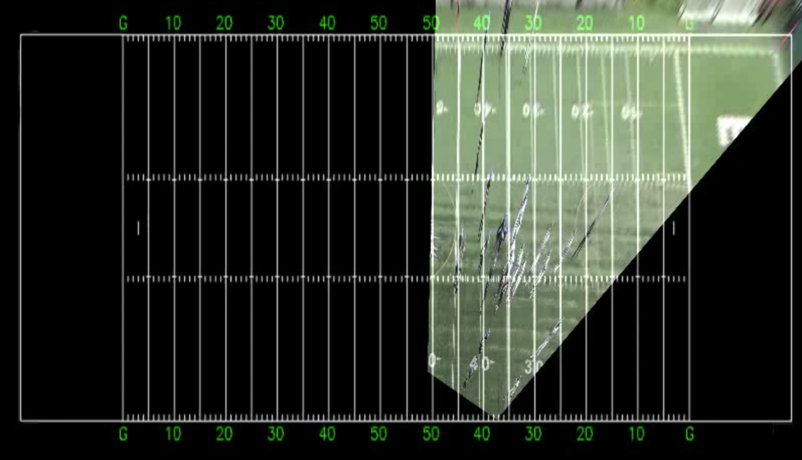Once the homography matrix is computed, we select a point where the first down line should be located and a point for the scrimmage line. Next, the homography matrix is applied to both points to get the location of both clicked points in the field model. After that, the x coordinate of each point is taken and put with the y coordinates of both sidelines to create the extremities of the first down and scrimmage line in the field model.
Transformed points in field model
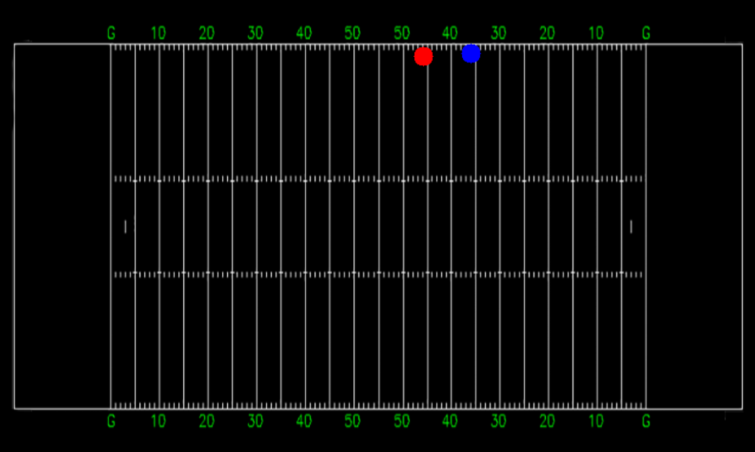The inverted homography matrix is next applied to these lines extremities to retrieve the start and end point for each lines in the original image.
Line drawing
Now that the proper homography matrix has been calculated, the next step is to create masks in order to draw both lines on the field. To obtain realistic results, it's key to make sure that players and referees look like they are walking over the line. In order to achieve this, a window is created with HSV values sliders. This window allows to render the field mask with the current HSV values of the mask. Once the displayed mask is satisfying, two line masks are draw with the starting and ending points for each line calculated in the previous step.
HSV mask builder with sliders
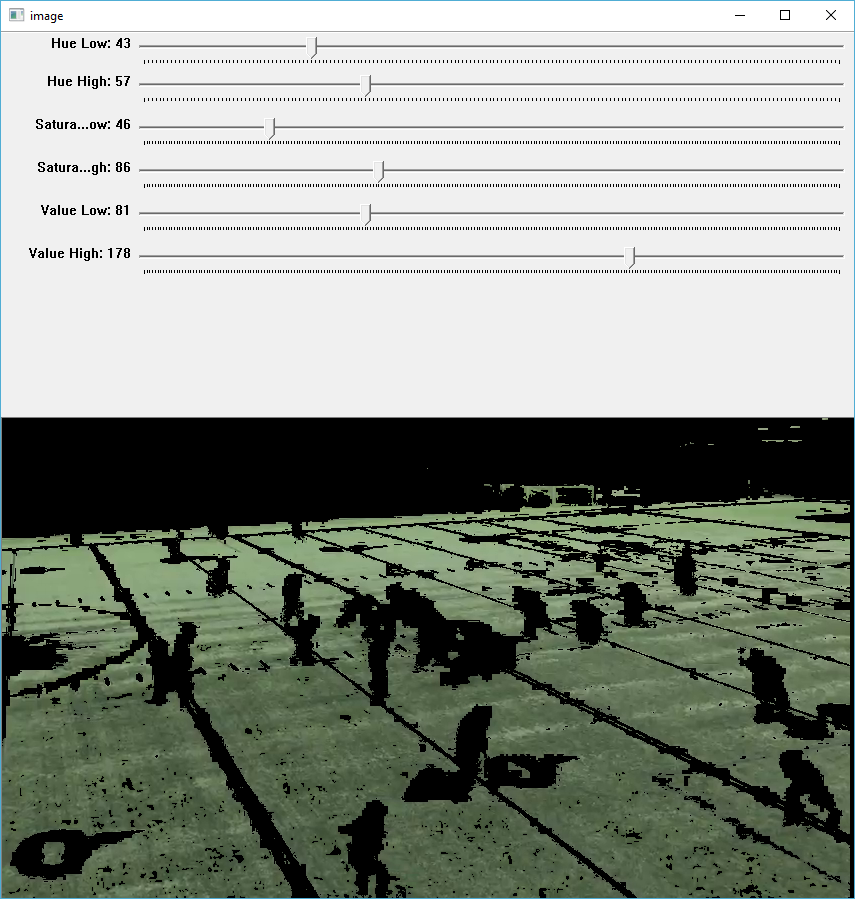Generated field mask
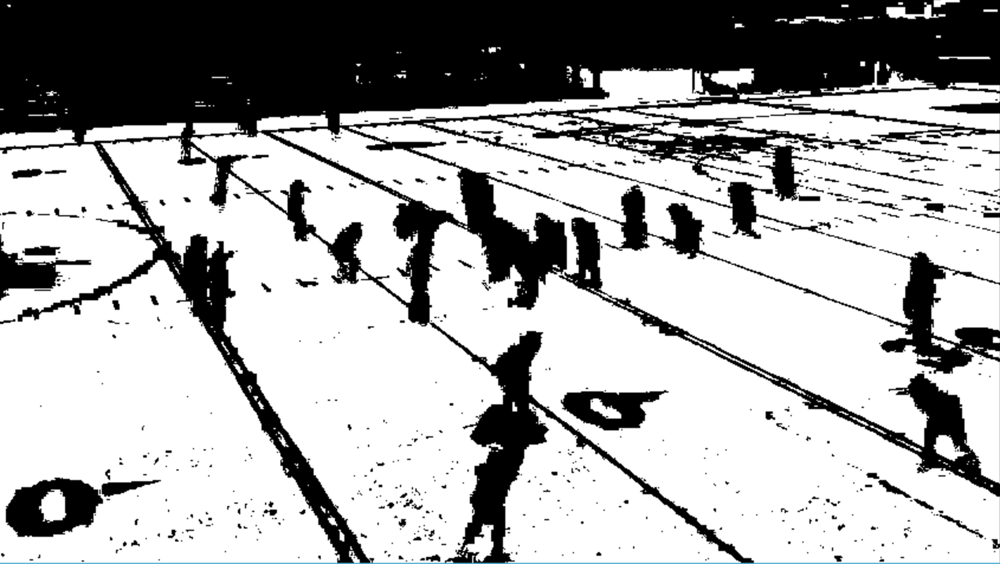Using different bitwise operations on masks, the inverted HSV field mask and the line mask are added together resulting in a line mask minus everything that is not the field such as players and referees. Next, those 2 lines are draw on the field.
Lines mask
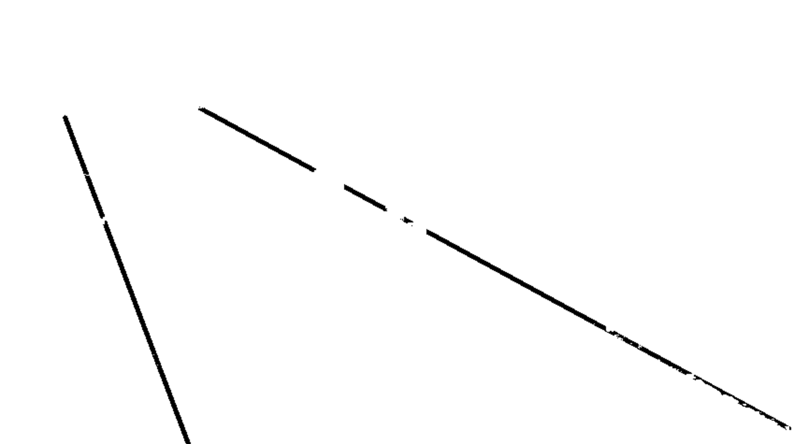Generated image with first down and scrimmage lines
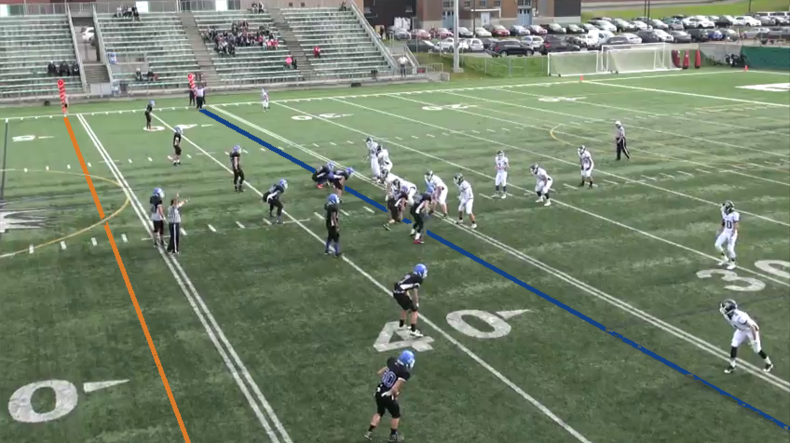
References
[1] Timothy E. Lee, Automating NFL Film Study: Using Computer Vision to Analyze All-22 NFL Film, http://cvgl.stanford.edu/teaching/cs231a_winter1415/prev/projects/LeeTimothy.pdf